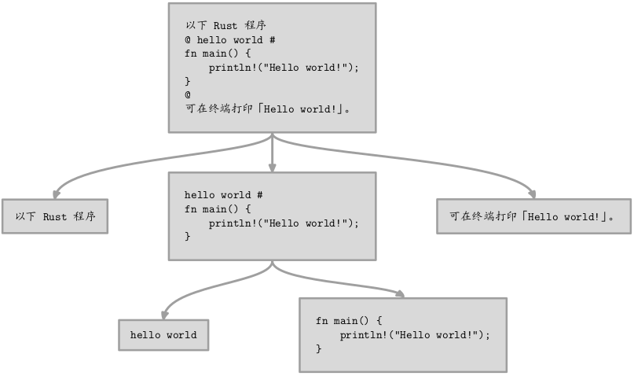

2023 年 06 月 22 日
对于以下字符串
以下 Rust 程序
@ hello world #
fn main() {
println!("Hello world!");
}
@
可在终端打印「Hello world!」。首先以正则表达式 "\n[ \t]*@[ \t\n]*" 作为分割符——换行符、一些可选的空白字符（空格和制表符）、'@' 以及一些可选的空白字符（空格、制表符和换行符）构成，对该字符串进行分割，然后对分割所得的第 2 个字段
hello world #
fn main() {
println!("Hello world!");
}以 "[ \t]*#[ \t]*\n" 作为分割符进行分割。要求以一个树形结构存储上述字符串以及它的两次分割所得的全部字段，如下图所示

使用 Rust 语言构建树形结构对于大多数初学者而言异常困难。不过，可以先从最简单的情况开始。假设树只有 1 个结点，它就变得相当简单：
struct TreeNode {
data: &str
}
fn main() {
let root = TreeNode {data: "Hello world!"};
println!("{}", root);
}然而，即便代码如此简单，逻辑上似乎也毫无破绽，但 Rust 编译器报出两处错误。第一处错误是结构体 TreeNode 未给出寿命标注，需将其定义修改为
struct TreeNode<'a> {
data: &'a str
}寿命及其标注，是 Rust 语言最难于理解之处。简单而言，Rust 语言里，每个值都有寿命，故而变量也有寿命，且变量的寿命应当总是小于或等于它所绑定或引用的值的寿命。上述代码中，类型为 TreeNode 的变量 root 的域 data 引用了类型 str 的值，相当于 root 引用了类型 str 的值，因此 root 的寿命必须小于或等于它所引用的值，但是 Rust 语言编译器无法从代码中推断出这一结论，故而需要我们给 TreeNode 的定义增加寿命标注，用于告诉编译器，类型为 TreeNode 的任何一个值的寿命不会超过它所引用的值。
注意：我将 Rust 英文术语「Lifetime」译为「寿命」，而网络上大多数文档将其译为「生命周期」，我无法接受这个翻译，因为「周期」通常用于表示事物反复出现所经过的固定时间间隔，但 Rust 语言里的值并不会死而复生。
第二处错误是，TreeNode 未实现 std::fmt::Display 这个特性，故而无法使用 println! 以 {} 的形式输出。修复该错误的简单方法是，首先让 TreeNode 继承 Debug 特性：
#[derive(Debug)]
struct TreeNode<'a> {
data: &'a str
}然后使用在 println! 中以 {:?} 格式打印 root：
fn main() {
let root = TreeNode {data: "Hello world!"};
println!("{:?}", root);
}修正后的程序，能给出以下输出：
TreeNode { data: "Hello world!" }不过，Rust 编译器依然给出一个警告，称 TreeNode 的 data 域未有用到。可在程序起始处添加以下代码关闭该警告：
#[allow(dead_code)]现在尝试给 TreeNode 增加一个域 child 用于表示当前结点的子结点：
#[derive(Debug)]
struct TreeNode<'a> {
data: &'a str,
child: &‘a TreeNode<'a>
}child 的类型为 &'a TreeNode<'a>，表示该域是对类型为 TreeNode 且寿命不小于 'a 的变量的引用。
当我们称「X 是对变量 Y 的引用」，其含义是什么呢？
首先，应当思考，什么是变量。在 Rust 语言中，定义一个变量，例如
let a = 1;实质上是用名字 a 绑定值 1。如果再定义一个变量，使之引用 a：
let b = &a;此时，b 实质上是值 1 的另一个名字而已。所以，在那些提供了引用语法的语言，将「引用」解释为「变量的别名」。类似于一个人有着一些绰号，而这个人的姓名便是变量，这个人的本体便是变量所绑定的「值」。
理解了上述概念，就应该明白，引用本质上是对值的引用，变量只是提供了寻值的途径。事实上，直接对值进行引用完全是可以的，例如
let a = &1;因此，当你看到类似「y 是变量 x 的引用」这样的表述时，你需要清楚，它的真正含义是 y 是对 x 所绑定的值的引用。
现在，回到 TreeNode 的定义。该定义存在两个致命的问题：
&'a TreeNode<'a> 是不可变引用类型，亦即无法通过 child 域修改其引用的值。TreeNode 无法实例化。第一个问题容易解决，只需将 TreeNode 的 child 域的类型改为可变引用类型，即
struct TreeNode<'a> {
data: &'a str,
child: &‘a mut TreeNode<'a>
}可变引用（&mut）的用途是借助某个可变的变量的引用修改该变量的值。例如
let mut a = 1; // 可变的变量
let b = &mut a; // 可变的变量的可变引用
*b = 3; // 修改被引用的值
println!("a = {}", a);结果为
a = 5Rust 语言的变量虽然名为变量，但实际上默认状态，变量的值并不允许修改。需要在定义变量时添加 mut 修饰，方能使之名副其实。若用 mut 修饰 &，便可形成可变引用。若通过可变引用修改变量的值，需要先用 * 符号对可变引用进行解引用，以获得变量的值对应的内存地址，然后向该地址写入数据。
第二个问题，需基于枚举类型予以解决。
Rust 的枚举（enum）类型像量子叠加态，或者像一个盒子，里面有多个东西，但是当你打开这个盒子时，只能看到这些东西中的一个。例如，盒子里有两只猫，一只是死的，另一只是活的，待打开盒子后，只能看到一只死猫或一只活猫。在一些函数式编程语言中，像枚举这样的类型，称为代数数据类型。
如果这样的盒子只包含两种类型，一种表示有某种东西，另一种表示没有东西，用 Rust 语言的泛型可将这个盒子表示为
enum Option<T> {
Some(T),
None
}基于 Option 类型，只需将 TreeNode 定义为
struct TreeNode<'a> {
data: &'a str,
child: Option<&'a mut TreeNode<'a>>
}便可构造 TreeNode 的实例了。例如
let root = TreeNode {data: "root node", child: None};事实上，上述 Option 类型并不需要由我们定义，Rust 标注库已经给出了定义，我们直接使用即可。下面给出本节示例完整的程序：
#[allow(dead_code)]
#[derive(Debug)]
struct TreeNode<'a> {
data: &'a str,
child: Option<&'a mut TreeNode<'a>>
}
fn main() {
let root = TreeNode {data: "root node", child: None};
println!("{:?}", root);
}其输出为
TreeNode { data: "root node", child: None }以下代码片段，使用 Option 类型的 Some(T) 可为一个 TreeNode 实例构造非空子结点。例如
let mut root = TreeNode {data: "root node", child: None};
let mut foo = TreeNode {data: "foo node", child: None};
root.child = Some(&mut foo);
println!("{:?}", root);输出为
TreeNode { data: "root node",
child: Some(TreeNode { data: "foo node",
child: None }) }上述代码中，由于要修改变量 root 的域 child，且 root.child 需要对变量 foo 进行可变引用，故而在定义变量 root 和 foo 时需要可变修饰。
对于上一节最后构造的树的根结点 root，如何为它的子结点构造子结点呢？显然，以下代码是不正确的，
let mut bar = TreeNode {data: "bar node", child: None};
root.child.child = Some(&mut foo);原因是，root.child 的类型是 Option<&'a mut TreeNode<'a>> 而非 TreeNode，前者没有 child 域，即使有，也与构造树结点这一任务毫无关系。
回顾一下上一节出现的这段代码
let mut root = TreeNode {data: "root node", child: None};
let mut foo = TreeNode {data: "foo node", child: None};
root.child = Some(&mut foo);既然 root 的 child 域包含了对 foo 的可变引用，且 foo 本身就是可变的变量，那么如果我们修改 foo.child，那么 root 的 child 域应当也会相应地被改变了。于是很容易写出以下代码：
let mut root = TreeNode {data: "root node", child: None};
let mut foo = TreeNode {data: "foo node", child: None};
root.child = Some(&mut foo);
let mut bar = TreeNode {data: "bar node", child: None};
foo.child = Some(&mut foo);悲剧的是，Rust 编译器会拒绝让上述代码通过，它认为，既然 foo 的值已经被 root 的 child 域借用了，就不能再通过 foo 修改这个值。在 Rust 语言里，「借用」实际上就是「引用」，因为变量的值的借用总是以引用的形式实现。
不要沮丧，既然树结点的子结点被包裹于 Option 类型的值内，可使用模式匹配语法予以析取。例如
let a = match root.child {
Some(v) => v,
None => panic!("No child node!")
};如果你读过一些 Rust 编程的入门书，上述代码很容易写得出来，因为书中给出的示例大都如此。上述代码本身并没有问题，但是倘若在其后再次使用 root 变量，例如
println!("{:?}", root);便会导致 Rust 编译器报错，称 root 的值有一部分被移动了，导致该值无法再被 println! 借用。root 的值的局部被谁移动了呢？被 Option 的 Some() 方法。要理解这个错误，需要充分理解 Rust 语言里的值的所有权的概念。
Rust 语言中，每一个值都有一个所有者——变量或函数的参数（本质上也是变量）。值在任何时刻有且只有一个所有者。当所有者离开作用于作用域（寿命终止），其值将被自动丢弃（若值在堆空间，相应区域会被自动回收）。
如果将一个变量绑定到另一个变量，后者的值会被自动转移给前者，亦即后者放弃对该值的所有权，前者则从后者那里得到了对该值的所有权。例如
let a = 3.14;
let b = a; // a 失去了 3.14 的所有权，b 得到了该值的所有权
let c = Some(b); // b 失去了 3.14 的所有权，c 得到了该值的所有权
println!("{:?}", c);
println!("a = {}, b = {}", a, b); // 导致编译器报错理论上，上述代码的最后一行会导致 Rust 编译器报错，但实际上不会，因为 Rust 语言为基本数据类型实现了 Copy 特性。将一个基本类型的变量赋值给另一个变量时，值会被复制过去而非所有权转移。倘若 a 的值是一个结构体实例，例如
#[derive(Debug)]
struct Foo {
data: f32
}
fn main() {
let a = Foo {data: 3.14};
let b = a;
let c = Some(b);
println!("{:?}", c);
println!("a = {:?}, b = {:?}", a, b); // 导致编译器报错
}便会导致 Rust 编译器报错。
有三种方法可以解决在模式匹配中结构体或枚举类型的实例出现所有权被转移的问题。第一种方法是，匹配变量的引用，例如
let a = match &root.child {
Some(v) => v,
None => panic!("No child node!")
};由于取域或取方法所用的运算符 . 的优先级高于 &，因此上述语句中被引用的是 root.child，而非 child。引用即借用，它能临时获得值的所有权，待其作用域结束后，值的所有权会回归被引用的变量。在上述示例中，&root.child 获得的所有权在 match 语句结束后会自动归还于 root.child。
第二种方法是使用 ref 关键字对值进行部分引用，例如
let a = match root.child {
Some(ref v) => v,
None => panic!("No child node!")
};此时，位于 => 右侧的 v 实际上是 root.child 所封装的类型为 TreeNode 的值的引用，而非用于该值所有权的变量。
第三种方法是在 match 语句中对数据解封后，再封回，相当于变量的值的所有权在一番借用之后又回到自己手里。例如
root.child = match root.child {
Some(v) => {
对 v 作了一些处理;
Some(v)
},
None => None
};基于上述第三种方法，可以为树的根结点的子结点构造子结点：
root.child = match root.child {
Some(v) => {
v.child = Some(&mut bar);
Some(v)
},
None => None
};以下代码可为树的根结点的子结点的子结点构造子结点吗？
let mut third = TreeNode {data: "third node", child: None};
root.child = match root.child {
Some(v) => {
v.child = match v.child {
Some(w) => {
w.child = Some(&mut third);
Some(w)
},
None => None
};
Some(v)
},
None => None
};答案是，不能！上述代码存在的错误，一言难尽，但是本质上与以下代码存在的错误相同：
#[derive(Debug)]
struct Bar {
data: f32
}
#[derive(Debug)]
struct Foo {
data: Bar
}
fn main() {
let mut a = Foo {data: Bar {data: 3.14}};
let b = &mut a;
let c = b.data;
println!("{:?}", c);
}一个结构体类型的变量，其域值的所有权通常轻易不可移动给其他变量，特别是该结构体变量存在引用时。当一个结构体存在可变引用时，Rust 编译器禁止通过可变引用转移域值所有权。在上述代码中，对 Option 类型的值 v.child 进行模式匹配时，位于 => 左侧的 Some 函数会移动可变引用 v 所指向的结构体的 child 域的所有权，Rust 编译器禁止这样做。我并不确定我的理解是准确的，只是尽力在解释错误发生的原因，而且该错误已足以让上述企图完成的任务——为树的根结点的子结点添加子结点——无法完成。
在 TreeNode 的定义中，如果取消子结点的引用，而是以完全掌握其值的所有权，是否可行？例如
#[allow(dead_code)]
#[derive(Debug)]
struct TreeNode<'a> {
data: &'a str,
child: Option<TreeNode<'a>>
}
fn main() {
let mut root = TreeNode {data: "root node", child: None};
let mut foo = TreeNode {data: "foo node", child: None};
root.child = Some(foo);
println!("{:?}", root);
}答案是完全不可行。Rust 编译器称 TreeNode 是一个递归类型，占用空间的大小无法确定，然后给出了一些修改建议，例如建议使用 Box，Rc 或者 & 等间接方式定义该结构体类型。& 的方法，前面已经试验过了，我的能力不足以驾驭该方法。至于 Box 和 Rc 是否能解决问题呢？
在 Rust 语言里，任何一个值可以在栈空间，也可以在堆空间。位于堆空间的值，可以通过位于栈空间的指针访问和修改，Box 便是这样的指针之一。
Box 的 new 方法可在堆空间为指定的值分配空间并为之构造一个指针作为返回值。例如
let mut a = Box::new(3.14);
*a = 2.718; // 修改指针指向的堆空间的值需要解引用
println!("{}", a); // 打印结果为 2.718一个 Box 指针的寿命终止时，它所指向的堆空间区域会被自动释放，故而 Box 类型的指针被称为智能指针。Rust 语言也提供了其他类型的智能指针，待日后用到时再行探讨。
基于 Box 指针，可将 TreeNode 定义为
#[derive(Debug)]
struct TreeNode<'a> {
data: &'a str,
child: Option<Box<TreeNode<'a>>>
}以下代码大致结构皆在上文出现：
let mut root = TreeNode {data: "root node", child: None};
let foo = Box::new(TreeNode {data: "foo node", child: None});
root.child = Some(foo); // 构造根结点的子结点
let bar = Box::new(TreeNode {data: "bar node", child: None});
root.child = match root.child { // 构造根结点的子结点的子结点
Some(mut v) => {
v.child = Some(bar);
Some(v)
},
None => None
};
let third = Box::new(TreeNode {data: "third node", child: None});
root.child = match root.child { // 构造根结点的子结点的子结点的子结点
Some(mut v) => {
v.child = match v.child {
Some(mut w) => {
w.child = Some(third);
Some(w)
},
None => None
};
Some(v)
},
None => None
};
println!("{:?}", root);唯一需要注意的是，Some(mut ...) 它表示匹配的枚举结构中封装的对象是可变的，因为 match 语句中需要修改该对象的值。
以上代码证实了，& 和 &mut 做不到的事情，智能指针能做到。现在我们已经实现了一个可用的树结构，虽然它本质上只是一个单向链表，并且随着结点数量的增多，向链表的末尾添加一个新的结点要使用很多层 match 语句的嵌套结构方能完成。对于 Box 指针，嵌套的 match 语句是可以简化的，例如
let third = Box::new(TreeNode {data: "third node", child: None});
root.child = match root.child {
Some(mut v) => {
v.child = match v.child {
Some(mut w) => {
w.child = Some(third);
Some(w)
},
None => None
};
Some(v)
},
None => None
};可以简化为
let third = Box::new(TreeNode {data: "third node", child: None});
let child_of_child = match root.child {
Some(ref mut v) => v,
None => panic!("No child node!")
};
child_of_child.child = Some(third);之所以能简化是因为，指针类型实现了 Copy 特性，将其作为函数或方法的参数时，被传递的是其副本，而非本体，故而在 match 语句中不会出现值的所有权转移问题。
如何让一个树结点拥有多个子结点呢？用 Vec<T>，例如
#[derive(Debug)]
struct TreeNode<'a> {
data: &'a str,
children: Vec<Box<TreeNode<'a>>>
}因为 Vec<T> 若含有 0 个元素，可以表达空结点的意义，故而不再需要 Option 了。以下代码可以构造由三层结点构成的树结构：
let mut root = TreeNode{data: "Root node", children: vec![]};
let foo = Box::new(TreeNode{data: "Foo node", children: vec![]});
let bar = Box::new(TreeNode{data: "Bar node", children: vec![]});
root.children.push(foo);
root.children.push(bar);
let a = Box::new(TreeNode{data: "A node", children: vec![]});
let b = Box::new(TreeNode{data: "B node", children: vec![]});
root.children[0].children.push(a);
root.children[0].children.push(b);
println!("{:?}", root);所构造的树结构如下图所示：
{Root Node}
/ \
/ \
{Foo Node} {Bar Node}
/ \
/ \
{A Node} {B Node}现在终于可以着手解决本章开始所提出的那个问题了。首先，载入正则表达式库及其命名空间：
use regex::{Regex, Error};树的结构依然沿用上文最后给出的结构：
#[derive(Debug)]
struct TreeNode<'a> {
data: &'a str,
children: Vec<Box<TreeNode<'a>>>
}先构造一个空的但是能返回类型为 Result 的值的 main 函数：
fn main() -> Result<(), Error>{
return Ok(());
}在 main 函数中，首先构造树的根结点：
let mut root = Box::new(TreeNode {data: "以下 Rust 程序
@ hello world #
fn main() {
println!(\"Hello world!\");
}
@
可在终端打印「Hello world!」。", children: vec![]});注意，上述代码构造的根结点与前文略有不同，现在的根结点，其值位于堆空间，而不再是栈空间。
然后开始对 root.data 存储的字符串进行第一次分割：
let re = Regex::new("\n[ \t]*@[ \t]*")?;
let v = re.split(root.data);
for i in v {
let child = Box::new(TreeNode {data: i, children: vec![]});
root.children.push(child);
}然后再对 root 的第 2 个子结点（下标为 1）进行分割：
let re2 = Regex::new("[ \t]*#[ \t]*\n")?;
let child_2nd = &mut root.children[1];
let v2 = re2.split(child_2nd.data);
for i in v2 {
let child = Box::new(TreeNode {data: i, children: vec![]});
child_2nd.children.push(child);
}最后打印树结构：
println!("{:?}", root);输出为
TreeNode { data: "以下 Rust 程序\n@ hello world #\nfn main() {\n println!(\"Hello world!\");\n}\n@\n可在终端打印「Hello world!」。", children: [TreeNode { data: "以下 Rust 程序", children: [] }, TreeNode { data: "hello world #\nfn main() {\n println!(\"Hello world!\");\n}", children: [TreeNode { data: "hello world", children: [] }, TreeNode { data: "fn main() {\n println!(\"Hello world!\");\n}", children: [] }] }, TreeNode { data: "可在终端打印「Hello world!」。", children: [] }] }输出结果不甚直观，但是无误。
与 Rust 语言相比，C 语言没有引用，没有可以封装数据的枚举类型，也没有智能指针类型，但是这并不意味着 C 语言是贫穷的。下面是用 C 语言的结构体定义树的结点：
typedef struct TreeNode {
char *data;
GPtrArray *children;
} TreeNode;GPtrArray 是 GLib 库提供的用于存储一组指针的动态数组类型，其功能相当于 Rust 语言标准库提供的 Vec<T>。基于上述结构体类型，构造树的根结点：
TreeNode *root = malloc(sizeof(TreeNode));
root->data = "以下 Rust 程序\n"
"@ hello world #\n"
"fn main() {\n"
" println!(\"Hello world!\");\n"
"}\n@\n"
"可在终端打印「Hello world!」。";
root->children = g_ptr_array_new();以下代码实现了字符串第一次分割：
GRegex *re = g_regex_new("\n[ \t]*@[ \t\n]*", 0, 0, NULL);
gchar **v = g_regex_split(re, root->data, 0);
for (size_t i = 0; v[i]; i++) {
TreeNode *child = malloc(sizeof(TreeNode));
child->data = v[i];
child->children = g_ptr_array_new();
g_ptr_array_add(root->children, child);
}以下代码实现了字符串的第二次分割：
GRegex *re2 = g_regex_new("[ \t]*#[ \t]*\n", 0, 0, NULL);
TreeNode *child_2nd = g_ptr_array_index(root->children, 1);
gchar **v2 = g_regex_split(re2, child_2nd->data, 0);
for (size_t i = 0; v2[i]; i++) {
TreeNode *child = malloc(sizeof(TreeNode));
child->data = v2[i];
child->children = g_ptr_array_new();
g_ptr_array_add(child_2nd->children, child);
}上述代码在逻辑上与前文的 Rust 代码基本相同，但由于 C 语言缺乏内存自动回收机制，树结构的释放需要自行定义一个内存回收函数，例如
static void delete_tree(TreeNode *root) {
for (size_t i = 0; i < root->children->len; i++) {
TreeNode *child = g_ptr_array_index(root->children, i);
delete_tree(child);
}
g_ptr_array_free(root->children, TRUE);
free(root);
}同理，打印树的结构，也需要专门定义一个函数：
static void print_tree(TreeNode *root) {
g_print("{data: \"%s\", children: [", root->data);
for (size_t i = 0; i < root->children->len; i++) {
TreeNode *child = g_ptr_array_index(root->children, i);
print_tree(child);
g_print(", ");
}
g_print("]}");
}以下是打印树结构以及内存释放代码：
print_tree(root);
g_print("\n");其输出为
{data: "以下 Rust 程序
@ hello world #
fn main() {
println!("Hello world!");
}
@
可在终端打印「Hello world!」。", children: [{data: "以下 Rust 程序", children: []}, {data: "hello world #
fn main() {
println!("Hello world!");
}", children: [{data: "hello world", children: []}, {data: "fn main() {
println!("Hello world!");
}", children: []}, ]}, {data: "可在终端打印「Hello world!」。", children: []}, ]}以下代码用于释放树结构、用于存储字符串分割结果的数组以及正则表达式结构：
delete_tree(root);
g_strfreev(v);
g_strfreev(v2);
g_regex_unref(re);
g_regex_unref(re2);还需要注意一点，GLib 库提供的 g_print 函数虽然在功能上类似于 C 标准库提供的 printf 函数，但它基于语言本土化（Locale）打印文本。GLib 默认的语言本土化设定不支持打印中文，若操作系统已将语言本地化配置为中文，可使用以下代码，令 g_print 根据系统环境打印文本：
#include <locale.h>
/* 在 main 函数起始处添加以下内容 */
setlocale(LC_ALL, ""); /* 将 Locale 设置为系统默认 */如果是在 Linux 和 macOS 环境中，可使用以下命令查看系统的语言本土化设定：
$ locale至于 Windows，我不知道怎么查看它的 Locale。倘若不知该如何设置语言的本土化，也可以使用以下方案，将 g_print 的打印函数修改为 C 标准库提供的 fputs，以下是一个最小示例：
#include <stdio.h>
#include <glib.h>
void g_print_no_convert(const gchar *buf) {
fputs(buf, stdout);
}
int main (int argc, char **argv) {
g_set_print_handler(g_print_no_convert);
g_print("你好！\n");
return 0;
}Rust 语言的引用机制，是带着枷锁舞蹈的指针，枷锁是寿命标注和值的所有权转移等因素。若想更自由地舞弄复杂的数据结构，通常需要借助智能指针。Rust 语言提供了像 C 那样的指针，称之为原始指针。等到智能指针捉襟见肘之时，便需要考虑使用原始指针了。我不确定对于 rzeo 项目是否需要用到原始指针。我希望能用到，但又不希望。